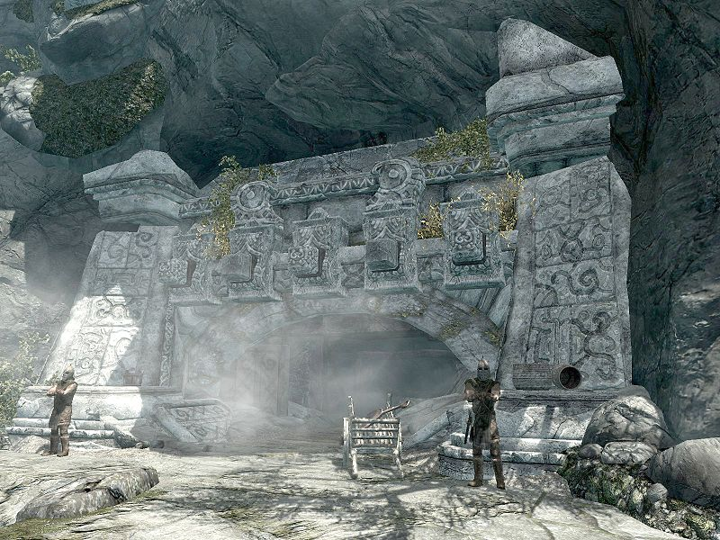
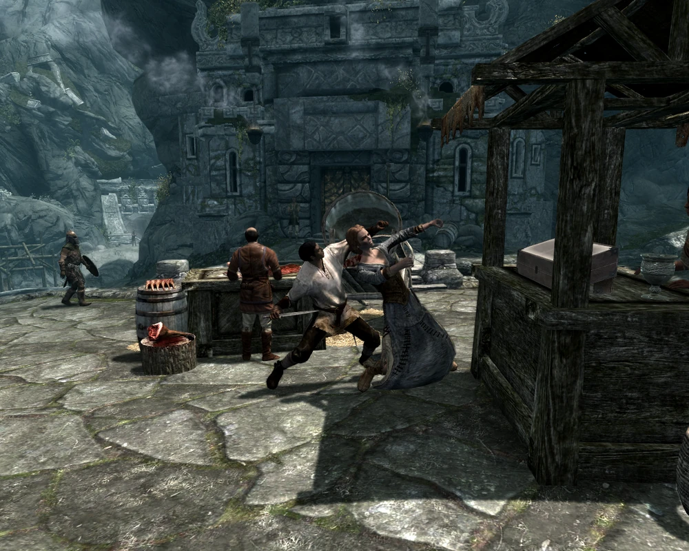

Markarth Post
Forsworn Watch
Forsworn Alert levels are now at Orange, Which means something could go down somewhere in some way at some point in time, SO LOOK SHARP
Help Wanted
- A Frostbite Spider has taken up residence in Nchuand-Zel, those brave enough to get rid of it should talk to Calcelmo
- Thalmor Agents have identified a possible illegal Talos Worship in the city. Loyal citizens of the empire are encouraged share any information
- A Dibella Statue has gone missing from Arnleif and Sons Trading Company
- Forsworn have taken Kolskeggr Mine, Should someone clear them out, a reward will be posted
A Trip Into The Cidhna Mine
The Silverbloods have granted us rare access into the Silverblood Mine earlier this week and what we found was incredible.
When we entered the Cidhna Mine we were expecting hard workers and boutiful harvests, and that is exactly what we found. Miners reported decent compensation, and a reasonable work schedule, when asked further they did say things might seem extreme from the outside, but they reminded everyone that they were in fact criminals and thus deserved to work a little extra in order to repay society.
This article was paid for by Thornar Silverblood
A Murder In Markarth!
Shocking everyone, it seems the Forsworn Menace has managed to sneak into the city and commit a dastardly murder!
Margret, a Nord, was out in the markets shopping at the stalls and preparing to purchase a necklace when Weylin, a Warrens resident, was seen sneaking up behind her before stabbing her in the back, yelling out as he did 'The Reach belongs to the Forsworn!'
Guards in the area took control of the situation swiftly, putting down the crazed Forsworn and securing the area. though after initial investigation they have determined this was simply a random act of Forsworn Violence and taht no further resources needed to be wasted on further investigations